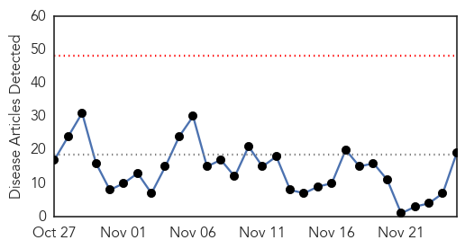
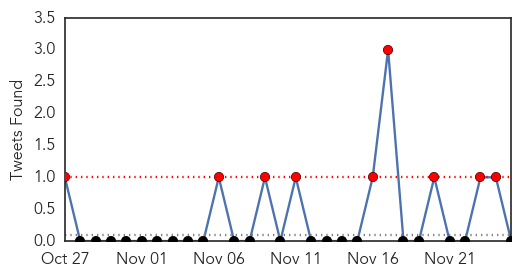
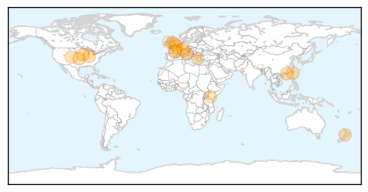
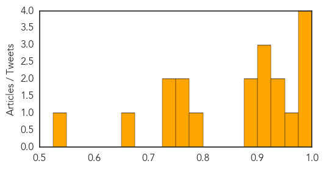
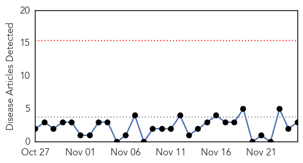
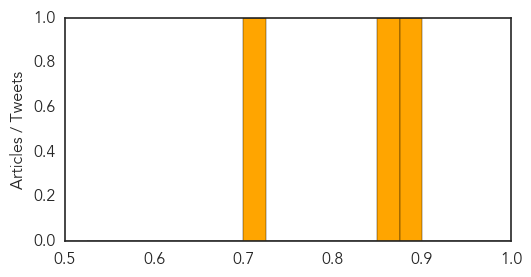

Influenza
30-Day Web Trend
0 alerts, 0 warnings

30-Day Twitter Trend
3 alerts, 0 warnings

Article Locations
Article Confidences
Top Articles:
- 0.998
- Two deaths from influenza reported in Iowa
- 0.997
- Seqirus receives FDA approval for FLUAD™ (Influenza Vaccine, Adjuvanted) for adults aged 65 years and older
- 0.996
- Food and Drug Administration Approves a New, Boosted Flu
- 0.990
- Avian influenza expert raises concerns as USDA stockpiles vaccines
- 0.957
- H7N9 avian influenza case reported in Meizhou City, Guangdong Province
- 0.945
- Preparing for flu season in the High Country
- 0.939
- Deadly bird flu outbreak puts emergency plan into action as risk to humans is assessed
- 0.924
- France finds deadly bird flu in heart of foie gras country
- 0.918
- FDA Approves First Seasonal Influenza Vaccine Containing an Adjuvant
- 0.907
- Coroner's legionellosis recommendations not being enforced
- 0.900
- Flu shot clinics set for Gananoque, Athens, Prescott
- 0.883
- France Finds Deadly Bird Flu in Heart of Foie Gras Country
- 0.783
- Bird flu reported in France
- 0.774
- Ineffective flu vaccine causes the number of excess winter deaths to TRIPLE in a year
- 0.754
- Asian and African Scientists Learn How to Detect Animal Diseases Threatening Livestock
- 0.748
- Morning Read: Turing officially cuts Daraprim, Ebola is back
- 0.732
- Viewpoint: GPs should practise what they preach by having a flu jab
- 0.657
- The New Indian Express
- 0.541
- Surge in winter deaths blamed on flu and vaccination issues
Top Tweets:
-
No tweets found for Nov 25, 2015
Measles
30-Day Web Trend
0 alerts, 0 warnings

30-Day Twitter Trend
0 alerts, 0 warnings

Article Locations

Article Confidences
Top Articles:
Top Tweets:
-
No tweets found for Nov 25, 2015